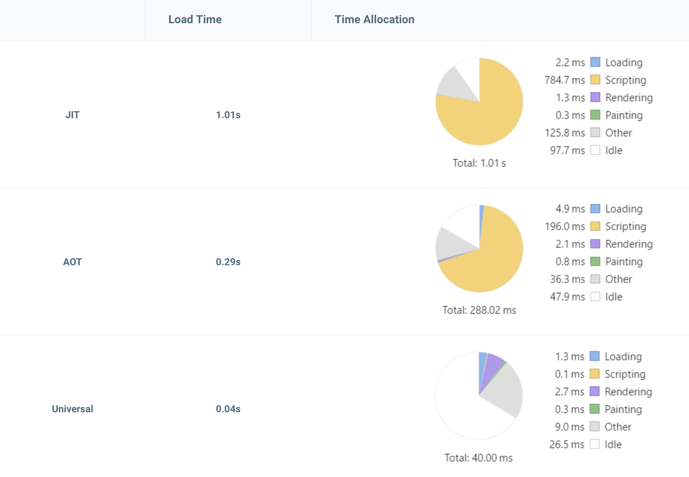
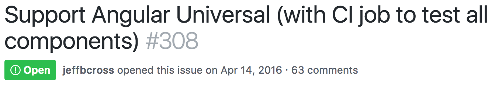

First Look at Angular Universal
What?
Universal: JavaScript code that can execute on the client and the server.
Why?
Performance
Startup Time
Performance
- Not just for the initial render
- Slow API - cache fully rendered version of the partial HTML
- Certain visualizations which require a lot of data and heavy computations such as graphs and charts
SEO
- JS incapabilities or timing issues with async loading lead to an imperfect index
- The crawler can determine exactly how long it takes before the user sees content (Document Complete)
- Server side rendering is not the future for SEO, but for now it’s hard to beat
Browser Support
- Use latest web technologies while still supporting older browsers
- Give legacy browsers a completely server rendered site while evergreen browsers get the full client side app
- Helps with accessibility as screen readers generally work with server rendered content better than dynamic client rendered content
Link Previews
- Websites and apps like Facebook, Twitter, G+, LinkedIn, etc. that generate previews from links rely on server rendering.
What's available today...
...and what's coming (soon) in future versions.
Angular 4.0
- Integrate the platform API into core Done
- Support Title and Meta services on the server Done
- Write documentation for core API In Progress
- Develop Express, ASP.NET Core,
Hapi engines In Progress
Angular 4.1+
- Hooks in renderModule* to do stuff just before rendering to string
- Generic state transfer API in the platform
- Http Transfer State Module that uses HTTP interceptors and state transfer API
- Better internal performance and stress tests
- Make it easier to write unit tests for Universal components
Angular 4.1+
- Support AppShell use cases
- Unified Document Service that combines Meta and Title services and adds more features
- Angular CLI support for Universal
- Material 2 works on Universal
- Provide a solution for Java backends
Angular 5.0 and beyond
- Full client rehydration strategy that reuses DOM elements/CSS rendered on the server
- Make it easier to support other 3rd part libraries like jQuery/d3 that aren't Universal aware
- Node.js bridge protocol to communicate with different language backends - Django, Go, PHP etc.
Angular Material Design
 https://github.com/angular/material2/issues/308Gotchas
Browser types like window, document, and navigator do not
exist on the server.
If you need them, you can use the Object injected using the PLATFORM_ID token to
check whether the current platform is browser or server.
import { PLATFORM_ID } from '@angular/core';
import {
isPlatformBrowser,
isPlatformServer
} from '@angular/common';
constructor(@Inject(PLATFORM_ID) private platformId: Object) { ... }
ngOnInit() {
if (isPlatformBrowser(this.platformId)) {
// Client only code.
}
if (isPlatformServer(this.platformId)) {
// Server only code.
}
}
Don't manipulate the nativeElement directly
Use the Renderer. This ensures that in any environment we're able to change our view.
constructor(element: ElementRef, renderer: Renderer) {
renderer.setElementStyle(element.nativeElement, 'font-size', 'x-large');
}
Preboot
- Record and playback events - Which events and how they are replayed are configurable
- Respond immediately to events
- Maintain focus even if page is re-rendered
- Buffer client-side re-rendering for smoother transition
- Freeze page until bootstrap completes if user clicks button
Demo App
What about the CLI?
…but for now: https://github.com/FrozenPandaz/ng-universal-demo
Builds on the TOH tutorial.
app.engine('html', ngExpressEngine({
bootstrap: ServerAppModule
}));
@NgModule({
...
imports: [
BrowserModule.withServerTransition({
appId: 'my-app-id'
}),
...
]
})
export class ServerAppModule { }
Defines a shared id so that the client-side Angular app can replace the DOM rendered on the server during application bootstrap.
Transfer State
Write data into the document so that it can be read by the client-side Angular app.
window['TRANSFER_STATE']